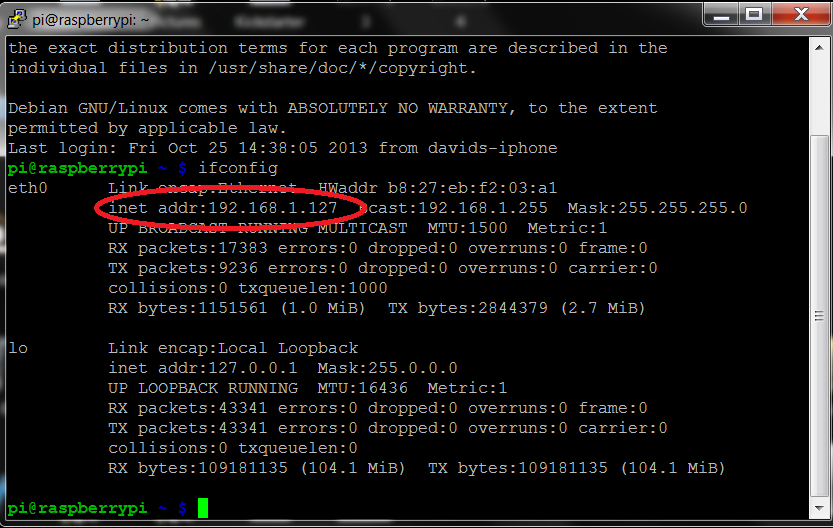
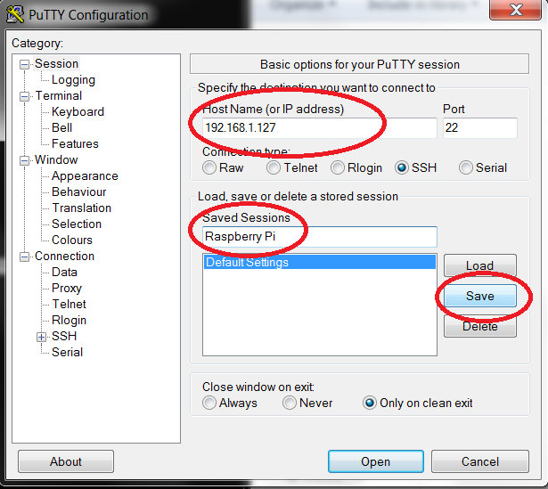
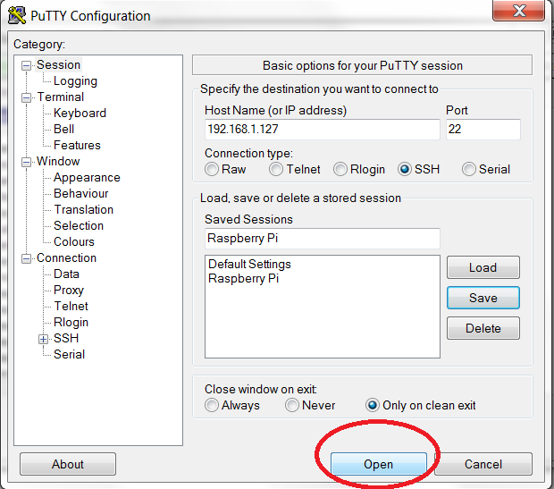
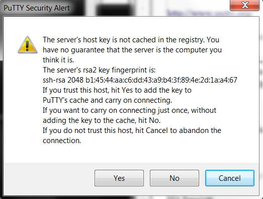
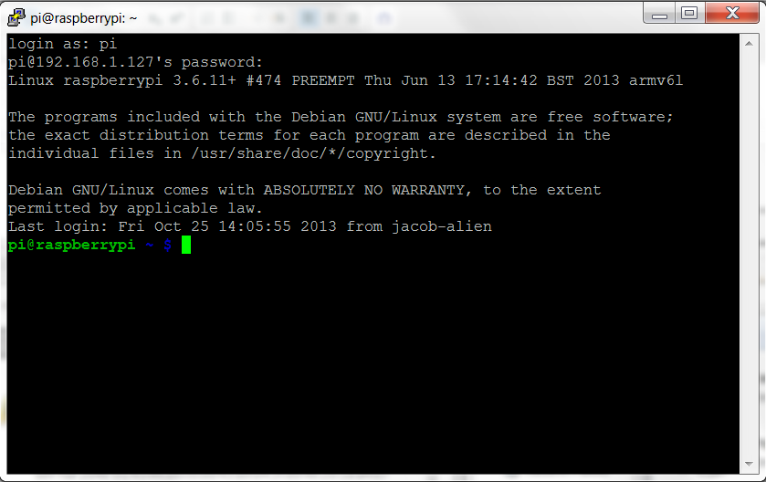

Acceso remoto por SSH
Para conectarse por SSH ya sea desde Windows o desde Linux hay que saber la IP de la Raspberry Pi ya sea estática o no. Si esta configurada de modo estática ya sabrás cuál es la IP en cambio si no esta configurada se puede saber desde la terminal de la Raspberry Pi teclear el comando ifconfig.  Donde dice inet addr: XXX.XXX.XX.XX es la IP privada de la Raspberry Pi.
Conexión en Linux
Bien una vez sabida desde Linux es tan fácil como abrir la terminal del Linux que se tenga da igual que distribución sea y escribir el ssh nombre de usuario arroba y la IP de la Raspberry Pi por ejemplo:
ssh eben@192.168.1.5
y al hacerlo se habrá conectado:
eben@raspberrypi ~ $
Conexión en Windows
Desde Windows hace falta un programa externo para conectarse a la Raspberry Pi puesto que se trata de un Linux, para ello se descarga el programa Putty desde su página oficial
hay versión ejecutable o instalable como se prefiera.
Bien una vez abierto el programa tendrá esta intefaz:

Sigamos, ahora hay que poner la IP privada de la Raspberry Pi o el Hostname que por defecto es raspberrypi yo recomiendo la IP ya que es mas fiable. Después el puerto SSH si no se ha modificado el que se pone por defecto es: 22 Se selecciona Saved y el nombre de la sesión para guardar la sesión y así no tener que volver a poner los datos, simplemente darle Load.  Después simplemente le damos a Open para abrir la sesión. 
Muy bien una vez hecho saldrá un mensaje de advertencia de seguridad, le damos Yes y no volverá a preguntarlo de nuevo.  Y para terminar iniciamos sesión con el usuario y contraseña de la Raspberry Pi. 